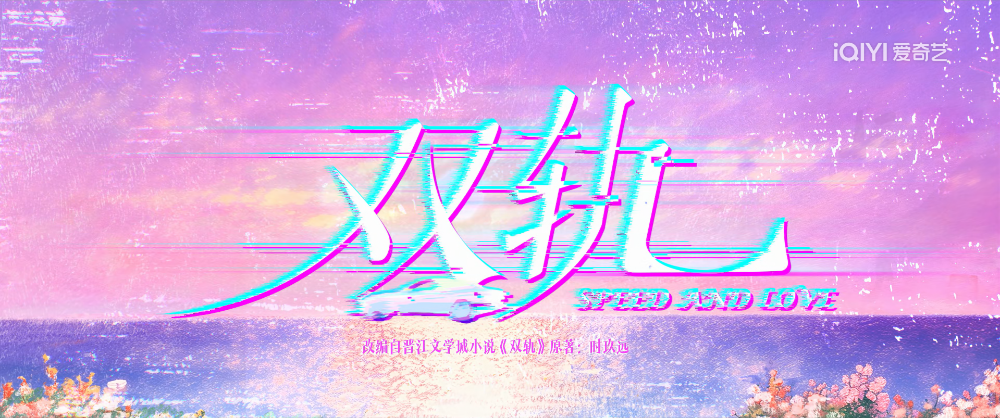
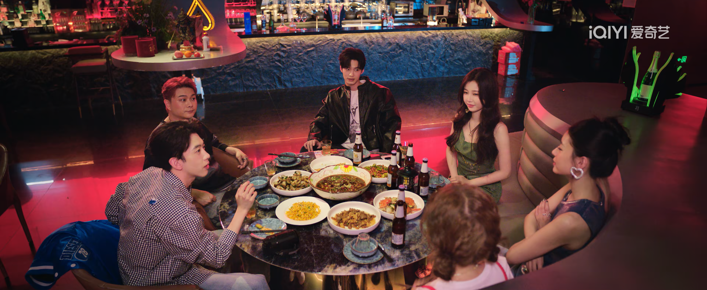
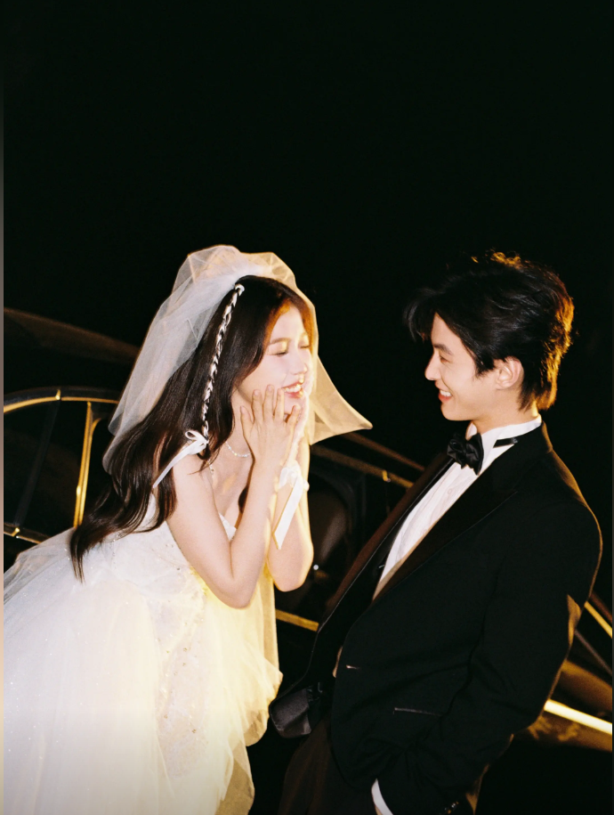

双轨
双轨》是一部由爱奇艺和稻草熊影业出品的爱情剧，改编自作 家时玖远的同名小说。该剧于2025年12月12日在爱奇艺首播，由于中中 、马鸣、徐棱棱执导，赵晓磊编剧，虞书欣和何与领衔主演，费启 鸣、吴翊歌等特别出演。
来看几个视频吧！
看到了以上的作品，对《双轨》应该也有些了解了吧。现在让我们更深入地了解这部霸榜的影视作品吧
双轨讲述了姜暮(虞书欣饰)和林深(何与饰)之间的爱情故事。
姜暮在小的时候因父母离异与哥哥靳朝走散，长大后，她独自前往泰国寻找她的哥哥，在 得知自己与靳朝没有血缘关系后，他们之间的感情从妹妹与哥哥，逐渐成熟。
现在让我们来介绍一下剧中的人物

古人云：痴情的三转子哥啊，请再等一世吧
李澳 饰 娜娜

孙美林 饰 万青（小青蛇）